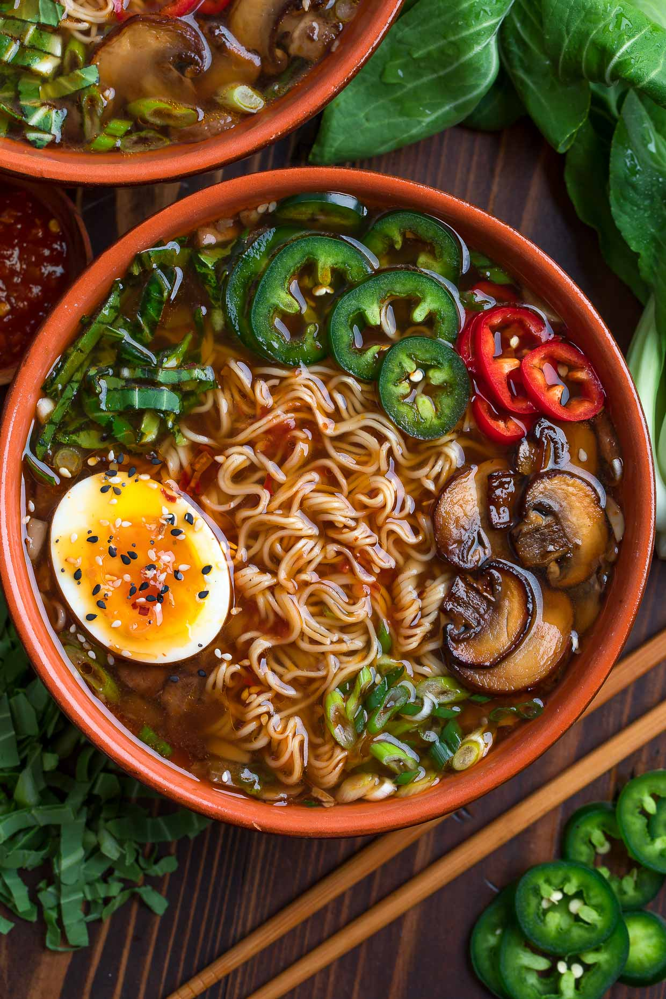

Veggie Ramen

Description
This is a recipe of some vegetarian ramen for anyone to make. It's a pretty simple process that I borrowed from google. :D
Ingredients
- 6-8 oz sliced baby portobello mushrooms
- 2 cloves garlic
- 1 tbsp sriracha :D
Steps
- Measure out all ingredients and prep veggies
- Prep and set aside choice of toppings
- Mince garlic